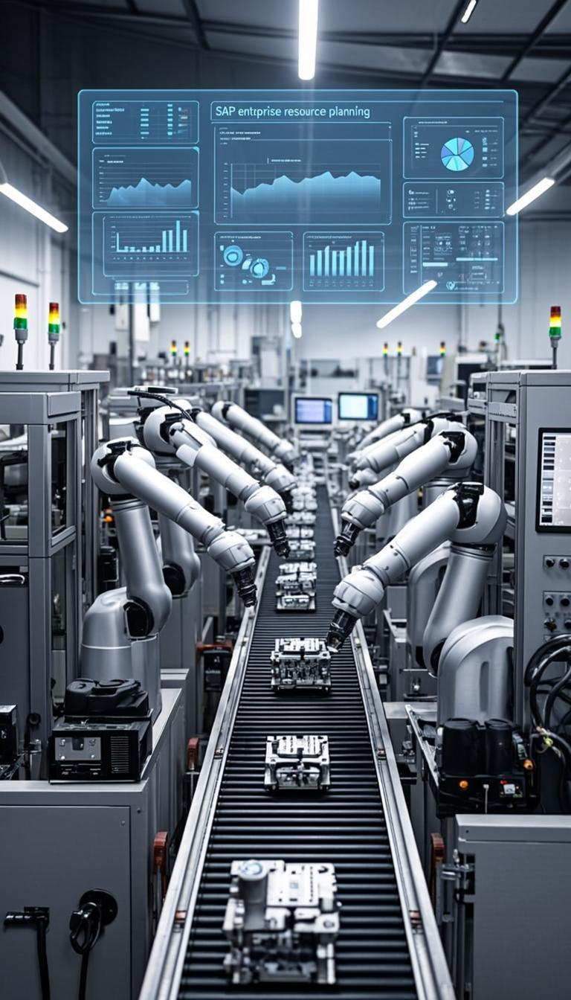

Real results from real engagements. See how we help enterprises transform their operations.

A leading German manufacturing company was running on outdated SAP ECC approaching end-of-maintenance. They needed to migrate to S/4HANA while maintaining business continuity and improving operational efficiency.
Synergy-GTS delivered comprehensive ECC to S/4HANA migration including business process redesign, data migration, integration testing, and phased go-live strategy with full-lifecycle support.
A major retail company in Spain experiencing significant delays in inventory management and financial reporting due to inefficient SAP MM configuration and outdated reporting processes.
Synergy-GTS conducted SAP MM optimization, redesigning procurement workflows, implementing real-time inventory tracking, and modernizing BI reporting layer with embedded analytics.